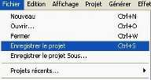

| Retour au didacticiel |
| Digital Audio Règles d'Audacity Organiser, Importer et Reproduire Enregistrer avec Audacity |
1. Créer un nouveau projet
Ceci est très important!
Audacity écrit toutes les modifications et les enregistre dans un dossier appelé Nom Projet . data , qui est situé là où vous avez sauvegardé le projet lui-même.
Ainsi, sélectionnez  et choisissez chemin et nom de fichier pour votre projet.
Notez que lors du démarrage d'une nouvelle session Audacity, seule l'option "Enregistre le projet sous..." du menu "Fichier" est disponible.
Pour sauvegarder à nouveau, vous pouvez utiliser le raccourci clavier : CTRL+S
2. Contrôler les Préférences
Très important encore !
| Pressez CTRL+P
ou allez à ...
|
...puis contrôlez si la
sortie correcte est sélectionnée :
|
...définissez le taux d'échantillonnage de votre choix ... (44.1 kHz : taux par défaut) 
|
...et ici, Format de fichiers, c'est un écran crucial : 
|
A ce stade, Les formats de fichiers ont besoin d'être examinés.
Lors de l'import d'un fichier non compressé, il y a deux façons de le faire.
"Créer une copie de l'original", pour qu'Audacity copie le fichier en entier que vous importez dans son dossier de projet et dans le processus organise la petite fenêtre de graphes, dont les descriptions sont aussi stockées dans le dossier du projet de données.
Le second moyen est d'importer l'audio original. Vous pourriez penser avoir édité ce fichier, mais pas du tout. En fait, Audacity lira le fichier importé et créera simplement sa vue graphique dans le dossier de données, puis écrira sur disque toutes des données que vous changez. Le fichier originel est seulement utilisé pour rejouer. Tous les sons demeurant inchangés sont rejoués à partir du fichier d'origine.
L'avantage de faire une copie de l'original est de vous éviter les problèmes, quels que soient les changements réalisés.
Par exemple si vous effaciez accidentellement l'original, vous seriez perdu: aucune des modifications enregistrées ne serait réutilisable.
Choisissez de faire une copie de tous les fichiers importés et vous utiliserez moins d'espace sur votre DD ; il sera aussi plus facile de revenir en arrière sur votre projet, car aucun fichier source ne sera lié à votre projet (cf. votre dossier Projet).
Le format d'export non compressé peut vous permettre d'écrire en WAV or AIFF. Contrôlez avec la page Formats de fichiers pour plus d'informations sur les formats d'export.
Pour l'instant, nous n'aborderons pas les options du Spectrogramme.
De même pour les Répertoires, car toutes les informations sont dans le feuillet Enregistrer, ou Annuler et autres trucs, si vous n'avez pas encore sauvegardé votre projet. Si notre projet est enregistré, cette partie de manuel est moins importante, bien que vous puissiez vouloir retravailler ces points plus tard, correctement. Initialement, les données sont dans un dossier appelé "audacity_temp" dans le répertoire où vous étiez lors du démarrage d'Audacity.
3. Importer un fichier audio
3 possibilités pour se faire :
1. Simplement glisser déplacer le fichier dans la fenêtre Audacity. (Si vous utilisez Mac OS 9 or X, glissez le fichier sur l'icône Audacity ...)
2. Sélectionnez Importer Audio ... dans le menu Projet.
3. Utilisez le raccourci : CTRL+I
Audacity peut importer du WAV, AIFF, IRCAM, MP3 et fichiers OGG. Référez vous à la page format de fichiers pour plus d'informations sur les formats. Pour les projets que vous avez déjà sauvegardé au format AU, c'est la fonction [Fichier / Ouvrir] qui devra être utilisée pour charger le projet.
4. Reproduire
Le fichier importé pourrait être visualisé dans une piste audio. La piste est visualisable en partie tel que ci-dessous, en fonction de votre import :

Si vous n'ave pas d'enregistrement à lire, capturez une partie de CD, ou bien, dans Windows, recherchez le dossier Sons ou Media dans le répertoire de votre installation Windows.
maintenant, cliquez sur le bouton vert "Jouer" en haut
 et vous devriez entendre le fichier importé.
et vous devriez entendre le fichier importé.